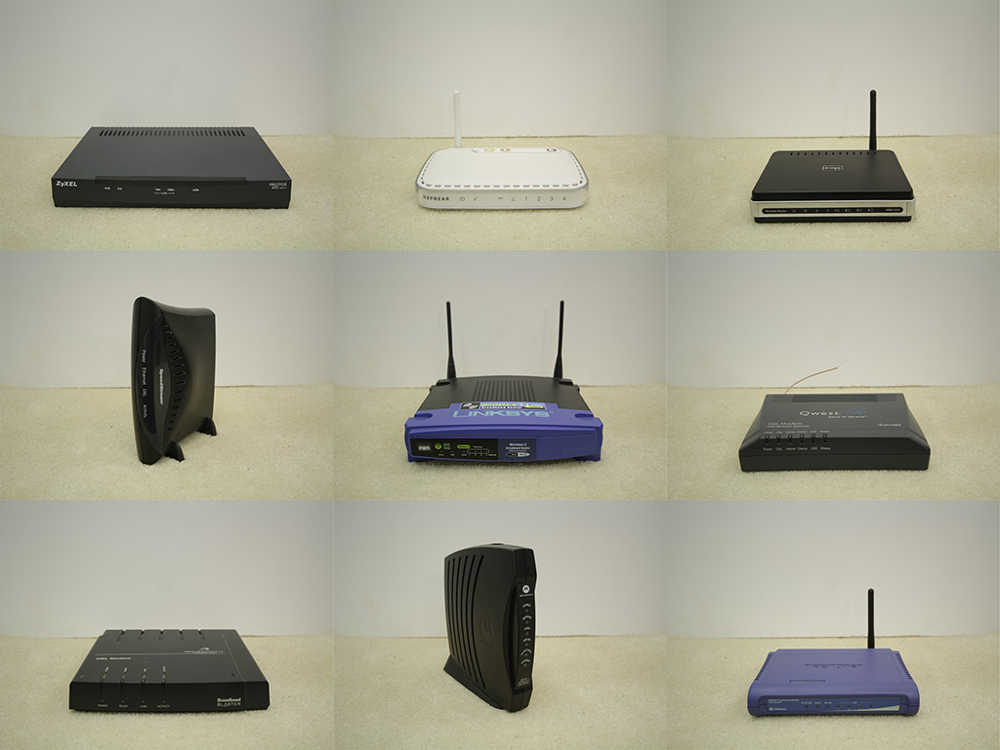

The Consortium for Slower Internet maintains a research laboratory directed by artist, designer, technologist, and MIT alumnus Sam Kronick.
Projects
Lab research is oriented around the Principles for Slower Internet. Research projects may manifest in a variety of formats, from design concepts to media installations to functioning product prototypes.

Study for Nodes (2013)
Funding Model
Interested entities pay a monthly fee to maintain membership in the consortium. In return, members can direct the lab's activities towards general areas of research through direct conversation with the lab's researchers. All design documents, software, and product prototypes produced by the lab are made available exclusively to consortium members for a period of at least six months following initial development. If a consortium member negotiates an arrangement agreeable with lab researchers to pursue product development in a more focused manner, the exclusive license may be extended indefinitely. If no arrangements are negotiated to the contrary, all intellectual property produced by the lab will automatically be licensed under an appropriate Creative Commons or free/libre/open-source software license after six months, at which point any entity (including a consortium member) is free to use it within the minimal constraints of those licenses.
This funding arrangement is designed to maximize collaboration between consortium members and lab researchers while ensuring that good ideas move forward towards full development and are not locked up in the equally frustrating purgatories of proprietary agreements or underfunding. This model was inspired by, amongst other things, the observation that all too often new media artists are the unpaid R&D of ad agencies.
Membership
For information on joining the consortium, please contact membership@slowerinternet.com.